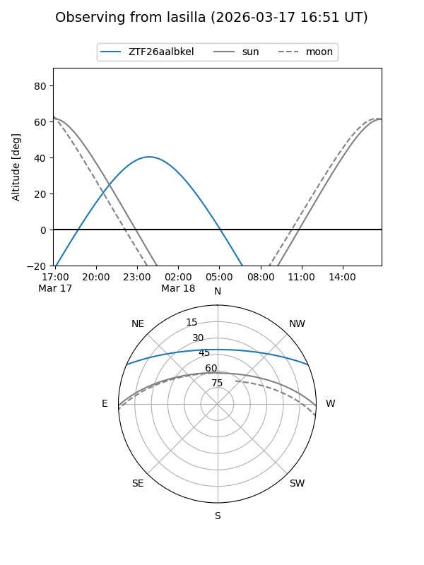
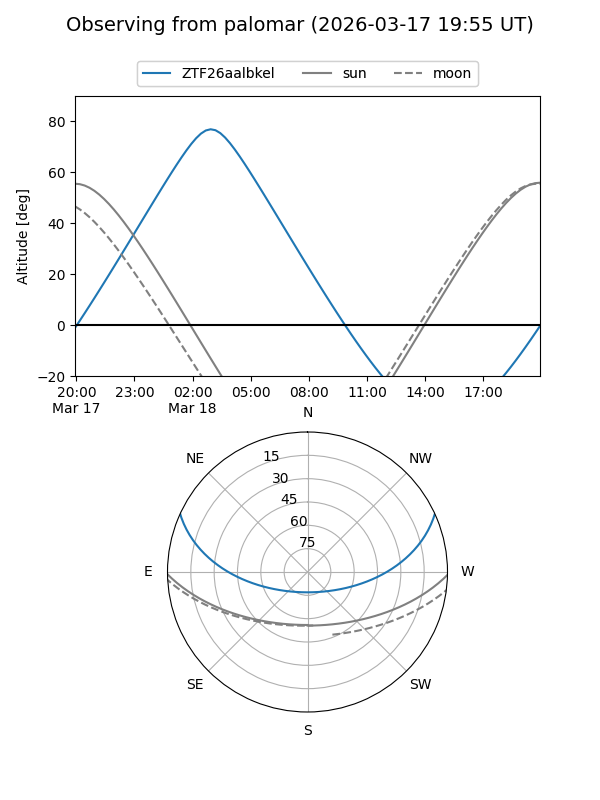

ZTF26aalbkel
Target ZTF26aalbkel at 2026-03-18 03:42
Aliases and brokers:
FINK: link
Lasair: link
ALeRCE: link
alt names
ZTF26aalbkel (ztf,fink_ztf)
Coordinates:
equatorial (ra, dec) = 102.6323,+20.31771
equatorial (HMS+DMS) = 06:50:31.74,+20:19:03.75
galactic (l, b) = (194.5998,+8.91793)
Flags:
Photometry:
last ztfg=19.90
1 ztfg detections
Lightcurve
Visibility


Additional plots